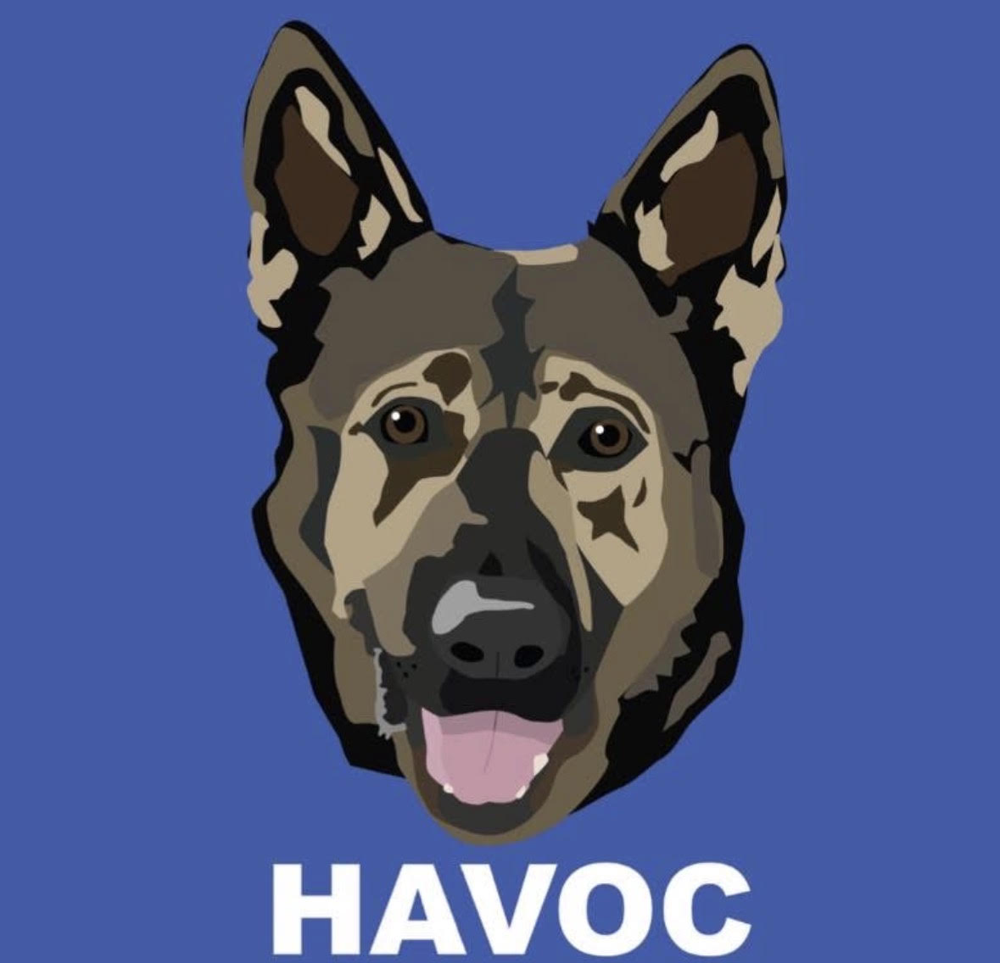
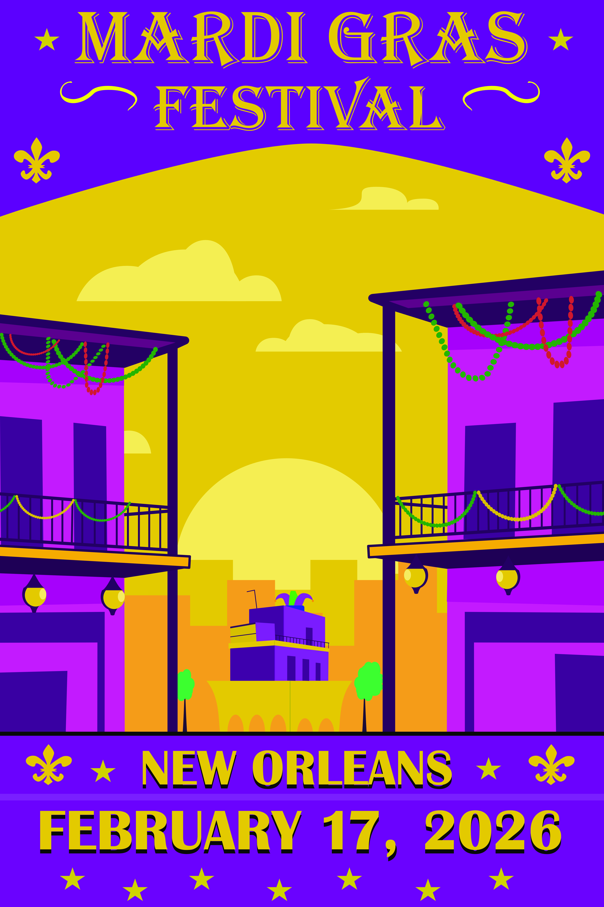
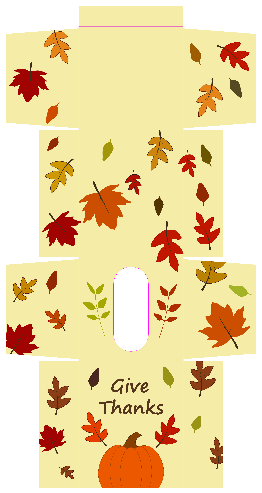
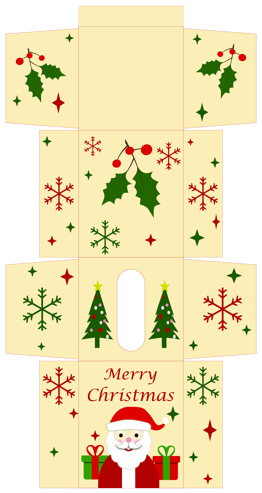
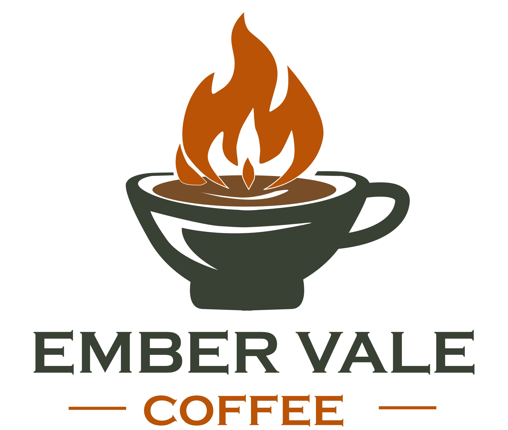
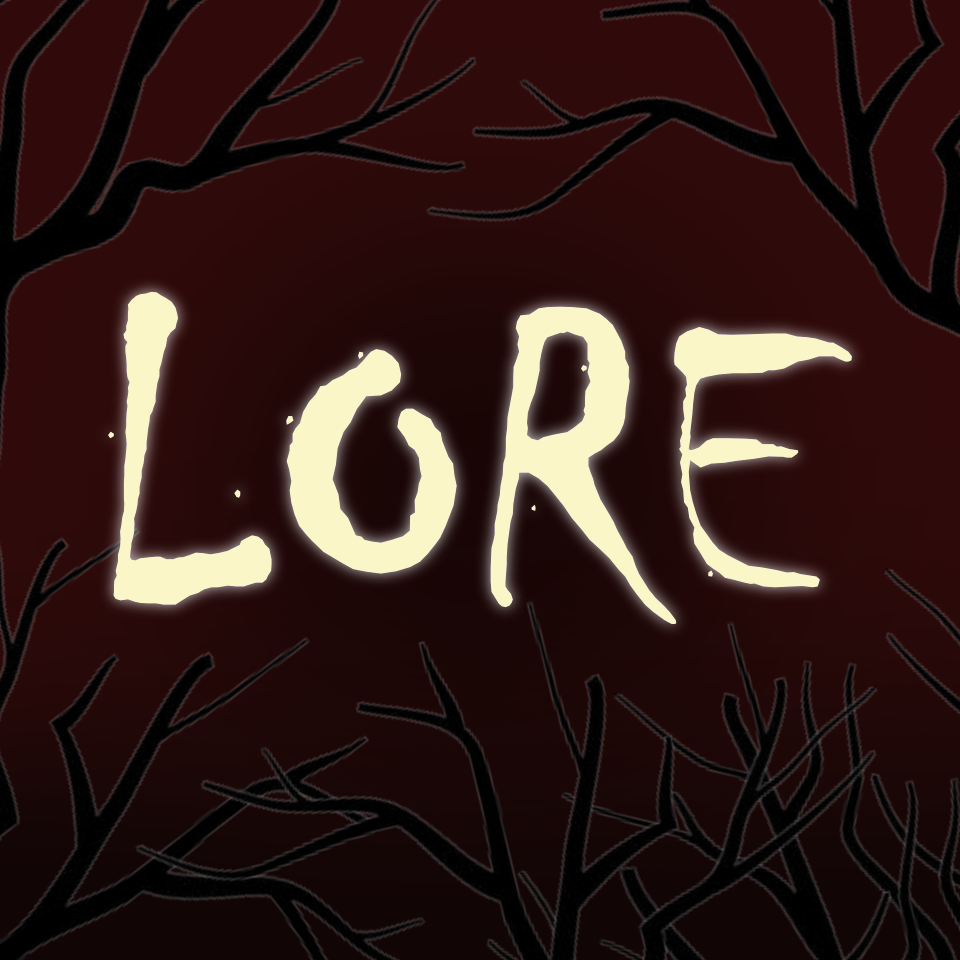
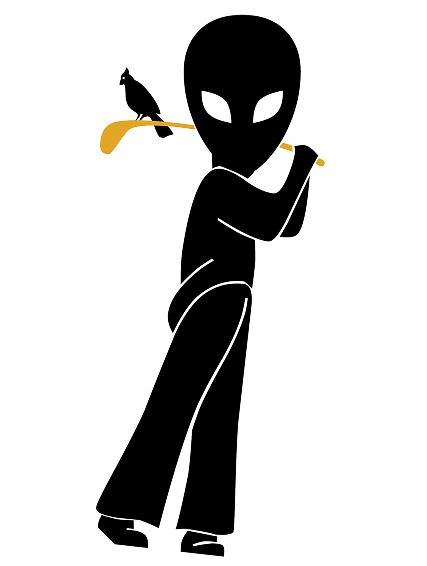

My Gallery
Explore a selection of my graphic design projects, creative work, and visual experiments.

Havoc Vector
This project was a layered vector illustration of my dog, built using multiple color- separated shapes. Each layer was carefully constructed and arranged to build depth, form, and structure while maintaining a clean vector style. I focused on accuracy in proportions as well as simplifying details into shapes that still captured personality and expression. The final result demonstrates control of layering, color organization, and digital illustration techniques.

Mardi Gras Poster
I decided to create one for a Mardi Gras festival in New Orleans. I really wanted to capture the fun, lively energy of the city, so I built the color palette around classic Mardi Gras purple, gold, and hints of green, mixed with warm pinks to give it a bright sunset vibe. To set the scene, I illustrated French Quarter-style buildings with wrought-iron balconies covered in beads framing the street, which leads your eye right toward the parade float and skyline in the middle. I wrapped it all up with solid purple banners at the top and bottom, adding gold lettering, fleur-de-lis icons, and little stars so the event name, location, and date pop and are super easy to read.

Thanksgiving Die Cut Tissue Box
This is a Thanksgiving-themed tissue box design inspired by the colors and decorations of autumn. Featuring a warm cream background, colorful fall leaves, and a pumpkin illustration, the design uses traditional seasonal elements to create a festive look. The goal was to create packaging that captures the feeling of Thanksgiving while keeping the design inviting and visually appealing.

Christmas Die Cut Tissue
This is a Christmas-themed tissue box design inspired by traditional holiday decorations and the spirit of Christmas. Featuring a festive Santa Claus illustration, a red and green color palette with a warm cream background, and seasonal details, the design aims to create a cheerful and welcoming appearance. The goal was to capture the excitement of the Christmas season through recognizable holiday imagery and festive packaging.

Crazy Bear Hotel Door Hanger
This project involved designing a themed hotel door hanger inspired by the Crazy Bear Hotel in Beaconsfield, London. The design features a bold black silhouette of a bear head with gold outline detailing, creating a strong contrast and a sense of luxury and character. This image was designed specifically for the front-facing side of the hanger, focusing on immediate visual impact and recognizability.

Morgan Freeman Symphony
This piece was created as part of a collaborative group project for the IMPAC Center, where each student contributed to a shared publication design. My role focused on designing and arranging the graphic composition using the provided materials. I worked on organizing the layout, integrating the imagery, and supporting the overall visual direction of the cover.

Ember Vale Coffee
This project focused on developing a brand identity for a fictional coffee company. I designed a logo that uses earthy tones and simple, clean shapes to communicate a warm and natural feel. The goal was to create a mark that could function across different applications such as packaging, signage, and promotional materials. I focused on balance, readability, and consistency to ensure the design felt cohesive as a complete brand system

Lore Podcast Vector
I created this vector illustration as a tribute to the Lore podcast, aiming to capture its creepy, campfire-story vibe. It features a deep crimson background framed by twisted dark tree branches, with the glowing, hand-drawn title right in the middle so it really pops. I kept the layout simple and moody to match the show's spooky folklore aesthetic while making sure it stays bold and eye-catching from a distance.

Custom Alien Golfer Glyph
I made this fun little character in Adobe Illustrator—it's a cool alien resting a yellow golf club over his shoulder with a bird perched on the end. The whole piece was built entirely out of typographic glyphs. By rotating, stretching, and piecing together different glyphs, I was able to shape out his silhouette and bring the scene to life.